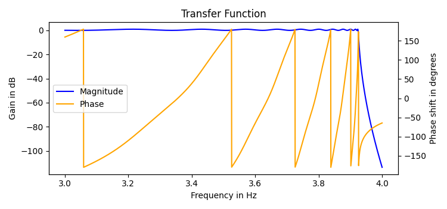

My Projects

eeeCalc
A python library officially published to PyPi that simplifies some electrical engineering calculations.
View project
Website File Downloader
The website file downloader is a simple project that I built out of necessity. Browsing through my professor's class pages, I found that a single page had many notes and resources that would be too tedious to download on their own. With this app, this process is automated, and the downloads are all stored neatly in a separate folder in the User's Downloads folder.
View project
Twitter and Instagram Weather Bot for College Station
This weather bot automatically gathers weather information about College Station, Texas, creates an image and text with the data, and posts them to Twitter and Instagram! It is run on my personal raspberry pi 24/7, posting intermittently without any user input.
View project